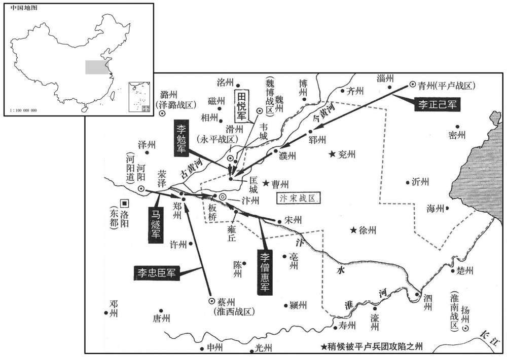

公元776年资治通鉴：本年记事、原文与白话对照
按原书编年位置阅读；追叙和史论不等于本年发生的事件。白话采用所据译本，缺译不以生成译文补齐。
卷225 · 本年记事
公元776年 · 唐代宗睿文孝武皇帝大历十一年
十一年〔（丙辰、七七六）〕
本年事件索引（现代整理）
- 代宗遣杜亚赴魏州宣慰田承嗣
- 田承嗣再请入朝，代宗赦免并恢复其官爵
- 崔宁奏称大破吐蕃及诸部联军
- 代宗增派朔方五城守军防备回纥
- 河阳军队哗变驱逐监军，冉庭兰回城平乱
- 田神玉去世，李灵曜杀孟鉴并拒绝受命
- 田承嗣遣军进犯滑州并击败李勉
- 吐蕃进犯石门并进入长泽川
- 代宗加授朱泚同平章事
- 李灵曜擅任属官并自专，朝廷命诸道讨伐
- 李僧惠等反对李灵曜并归附朝廷
- 李忠臣、马燧在郑州遭李灵曜突袭后收拢散兵
- 李正己攻取郓州、濮州，李僧惠击败李灵曜
- 李忠臣、马燧等围攻汴州李灵曜
- 田悦援救李灵曜被李忠臣、马燧击溃，李灵曜逃亡被擒
- 马燧谦让战功，李忠臣独揽功劳并杀李僧惠
- 李灵曜押送京师后被处斩
- 代宗任李正己、李宝臣为同平章事
- 段秀实严密安排马璘丧礼，挫败军中作乱阴谋
- 马璘家产巨万，其子孙挥霍后很快耗尽
- 李承昭病重，李抱真暂掌磁州、邢州
- 代宗任李忠臣为同平章事并令其镇守汴州

本年形势与背景参考图
春，正月，壬辰，遣谏议大夫杜亚使魏州宣慰。〔使，疏吏翻。〕
春季，正月壬辰（初三），代宗派遣谏议大夫杜亚出使魏州安抚田承嗣。
二月，庚辰，田承嗣复遣使上表请入朝。〔复，扶又翻。〕上乃下诏，赦承嗣罪，复其官爵，听与家属入朝，其所部拒朝命者，一切不问。
本段缺少可靠对应白话，原文完整保留；未使用生成译文。
辛亥，西川节度使崔宁奏破吐蕃四节度及突厥、吐谷浑、氐、羌群蛮众二十余万，斩首万余级。〔吐，从暾入声。厥，九勿翻。〕
辛亥（二十二日），西川节度使崔宁奏称打败了吐蕃的四节度和突厥、吐谷浑、氐、羌等蛮族二十多万人，斩首一万多人。
二月，庚辰，田承嗣复遣使上表请入朝。〔复，扶又翻。〕上乃下诏，赦承嗣罪，复其官爵，听与家属入朝，其所部拒朝命者，一切不问。
二月庚辰（二十二日），田承嗣再次派遣使者上表，请求入朝。代宗颁下诏书，赦免田承嗣之罪，恢复官爵，允许他与家属入朝，他的部下抗拒过朝廷命令的人，概不追究。
辛巳，增朔方五城戌兵，以备回纥。〔朔方先统三受降城并振武、丰安、定远，为六城。时三受降城属振武军。使朔方统丰安、定远、新昌、丰宁、保宁，谓之塞下五城。纥，下没翻。〕
辛巳（二十三日），增加戍守朔方五城的军队，以防备回纥。
三月，戊子，河阳军乱，逐监军冉庭兰出城，大掠三日。庭兰成备而入，诛乱者数十人，乃定。〔监，古衔翻。〕
三月戊子（初一），河阳军队发生哗变，驱逐监军冉庭兰出城，大肆掠夺三天。冉庭兰重整旗鼓，攻入城中，杀掉数十名作乱的士兵，才得以安定。
五月，汴宋留后田神玉卒。都虞候李灵曜杀兵马使、濮州刺史孟鉴，北结田承嗣为援。〔汴，皮变翻。卒，子恤翻。使，疏吏翻。濮，博木翻。嗣，祥吏翻。〕癸巳，以永平节度使李勉兼汴、宋等八州留后。〔汴、宋、曹、濮、兖、郓、徐、泗八州。濮，博木翻。〕乙未，以灵曜为濮州刺史，灵曜不受诏。六月，戊午，以灵曜为汴宋留后，遣使宣慰。
五月，汴宋留后田神玉去世。都虞候李灵曜杀死兵马使、濮州刺史孟鉴，向北勾结田承嗣作为后援。癸巳（初七），代宗任命永平节度使李勉兼汴宋等八州留后。乙未（初九），代宗任命李灵曜为濮州刺史，李灵曜不接受诏令。六月戊午（初二），代宗任命李灵曜为汴宋留后，派遣使者安抚李灵曜。
秋，九〔【章：十二行本「九」作「七」；乙十一行本同；孔本同；张校同。】〕月，田承嗣遣兵寇滑州，败李勉。〔滑州，永平节度治所。败，补迈翻。〕
秋季，九月，田承嗣派遣军队进犯滑州，打败李勉。
吐蕃寇石门，入长泽川。〔长泽川，后魏置阐熙郡，隋废郡为长泽县，属夏州。吐蕃寇原州，遂北入夏州界也。宋白曰：长泽县，汉朔方郡三封县之地。三封故城，赫连勃勃据之，筑为统万城。又按原州北有长泽监。吐，从暾入声。〕
吐蕃进犯石门，进入长泽川。
八月，丙寅，加卢龙节度使朱泚同平章事。〔考异曰：实录：「闰八月己亥，遣朱泚如奉天行营。」按去年已云泚出镇奉天行营；至此，又云；明年九月，又云。盖泚每年往奉天防秋，至春还京师。但实录不载其入朝耳。〕
八月丙寅（十一日），代宗加封卢龙节度使朱为同平章事。
李灵曜既为留后，益骄慢，悉以其党为管内八州刺史、县令，欲效河北诸镇。甲申，诏淮西节度使李忠臣、永平节度使李勉、河阳三城使马燧讨之。淮南节度使陈少游、淄青节度使李正己皆进兵击灵曜。
李灵曜既然担任留后，更加骄横傲慢，让他的党羽全部出任管内八州刺史和县令，想要效仿河北各镇。甲申（二十九日），代宗诏令淮西节度使李忠臣、永平节度使李勉、河阳三城使马燧前去讨伐。淮南节度使陈少游、淄青节度使李正己都进兵攻击李灵曜。
汴宋兵马使、摄节度副使李僧惠，〔少，始照翻。考异曰：汾阳家传作「李思惠」。今从旧传。〕灵曜之谋主也。宋州牙门将刘昌遣僧〔【严：「僧」改「曾」。】〕神表潜说僧惠；僧惠召问计，昌为之泣陈逆顺。〔将，即亮翻。说，式芮翻。为，于伪翻。〕僧惠乃与汴宋牙将高凭、石隐金遣神表奉表诣京师，请讨灵曜。九月，壬戍，以僧惠为宋州刺史，凭为曹州刺史，隐金为郓州刺史。
汴宋兵马使、代理节度副使李僧惠是李灵曜的主谋人。宋州牙门将刘昌派遣和尚神表偷偷去功说李僧惠，李僧惠召见刘昌询问对策，刘昌哭着陈述违背和顺从朝廷的利害关系。李僧惠便与汴宋牙将高凭、石隐金派遣神表携带奏表到京师，请求征讨李灵曜。九月壬戌（初八），代宗任命李僧惠为宋州刺史，高凭为曹州刺史，石隐金为郓州刺史。
乙丑，李忠臣、马燧军于郑州，〔汴，皮变翻。郓，音运。〕灵曜引兵逆战；两军不意其至，退军荥泽，〔隋分荥阳县置荥泽县，唐属郑州。九域志：在州西北四十五里。〕淮西军士遗去者什五六。郑州士民皆惊，走入东都。忠臣将归淮西，燧固执不可，曰：「以顺讨逆，何忧不克，柰何自弃功名！」坚壁不动。忠臣闻之，稍收散卒，数日皆集，军势复振。〔史言李忠臣因马燧以成功。复，扶又翻。〕
乙丑（十一日），李忠臣、马燧驻军郑州，李灵曜率军迎战，李忠臣、马燧两军都没有料到他们会突然到达，于是退守荥泽，淮西的士兵十分之五六都溃逃了。郑州的士人平民都很吃惊，纷纷逃入东都。李忠臣想要撤军回淮西。马燧坚持认为不行，说道：“用正义来讨伐叛逆，何必担心不能战胜敌人，为什么自己要放弃功名呢！”他坚守壁垒不动。李忠臣听说后，逐渐收集散兵，几天时间全部聚集，军队的声势又重新振作起来。
戊辰，李正己奏克郓、濮二州。壬申，李僧惠败灵曜兵于雍丘。〔濮，博木翻。败，补迈翻；下败永同。〕冬，十月，李忠臣、马燧进击灵曜，忠臣行汴南，燧行汴北，屡破灵曜兵；壬寅，与陈少游前军合，与灵曜大战于汴州城西，灵曜败，入城固守。癸卯，忠臣等围之。
戊辰（十四日），李正己奏称攻克郓州和濮州。壬申（十八日），李僧惠在雍丘打败李灵曜的军队。冬季，十月，李忠臣、马燧进攻李灵曜，李忠臣在汴州城南行动，马燧在汴州城北行动，多次打败李灵曜的军队；壬寅（十八日），他们与陈少游的前军会合，在汴州城西与李灵曜大战，李灵曜兵败，入汴州城固守。癸卯（十九日），李忠臣等人包围汴州。
田承嗣遣田悦将兵救灵曜，败永平、淄青兵于匡城，〔少，始照翻。匡城，汉长垣县，隋开皇十六年，更名；时属滑州。〕乘胜进军汴州，〔【章：十二行本「州」下有「乙巳」二字；乙十一行本同；张校同，云无注本亦无。】〕营于城北数里。丙午，忠臣遣裨将李重倩将轻骑数百夜入其营，纵横贯穿，〔纵，子容翻。穿，尺绢翻。〕斩数十人而还，〔还，从宣翻，又如字。〕营中大骇；忠臣、燧因以大军乘之，鼓噪而入，悦众不战而溃。悦脱身北走，将士死者相枕藉，不可胜数。〔噪，则緖翻。枕，职任翻。藉，慈夜翻。胜，音升。〕灵曜闻之，开门夜遁，汴州平。重倩，本奚也。丁未，灵曜至韦城，〔隋分白马县置韦城县于古韦国之墟，故曰韦城；时属滑州。九域志：韦城县，在滑州东南五十里。〕永平将杜如江擒之。
田承嗣派遣田悦率军援救李灵曜，在匡城打败永平、淄青的军队，乘胜进军汴州，在汴州城北几里的地方安营。丙午（二十二日），李忠臣派遣副将李重倩率领数百名轻装骑兵夜间突入田悦的营地，驰骋纵横，斩杀数十人后回师，田悦营中一片惊骇，李忠臣、马燧于是乘机率领大部队击鼓呐喊突入敌营，田悦的部众不战而溃。田悦脱身向北逃走，死去的将士相互枕藉，数都数不清。李灵曜听说田悦兵败，打开城门，连夜逃跑，汴州平定。李重倩本是奚族人。丁未（二十三日），李灵曜逃到韦城，被永平军将领杜如江抓获。
燧知忠臣暴戾，以己功让之，不入汴城，〔将，即亮翻。汴，皮变翻。〕引军西屯板桥。忠臣入城，果专其功；宋州刺史李僧惠与之争功，忠臣因会击杀之；又欲杀刘昌，昌遁逃得免。
马燧知道李忠臣为人粗暴强横，便将自己的功劳让给他，不进入汴城，而率领军队向西驻扎在板桥。李忠臣进入汴城，果然将功劳据为己有。宋州刺史李僧惠与他争功，李忠臣便乘会面之机将他杀掉；又想杀刘昌，刘昌逃跑才得以幸免。
甲寅，李勉械送李灵曜至京师；斩之。
甲寅（三十日），李勉将戴上枷锁的李灵曜送到京师，朝廷杀掉李灵曜。
十二月，丁亥，李正己，李宝臣并加同平章事。
十二月丁亥（初四），代宗同时加封李正己、李宝臣为同平章事。
泾原节度使马璘疾亟，以行军司马段秀实知节度事，付以后事。秀实严兵以备非常，丙申，璘薨，〔使，疏吏翻。璘，离珍翻。考异曰：实录：「庚寅，璘薨。」段公别传曰：「十二月十三日景申，马公薨。十二年正月八日，奉制除泾州刺史、知节度事。」实录又云：「丁酉，以段秀实知河东留后。」按时马璘新薨，秀实泾原留后，备御吐蕃，岂可辍之使摄河东！盖奏报未至，有斯命。寻闻璘薨，遂除泾原耳。亟，纪力翻。〕军中奔哭者数千人，喧咽门屏，秀实悉不听入。命押牙马拐治丧事于内，〔拐，徒历翻。治，直之翻。〕汉惠接宾客于外，妻妾子孙位于堂，宗族位于庭，将佐位于前，牙士卒哭于营伍，百姓各守其家。有离立偶语于衢路，辄执而囚之；〔记曲礼曰：离立者不出中间。注云：离，两也。〕非护丧从行者无得远送。致祭拜哭，皆有仪节，送丧近远，皆有定处，违者以军法从事。都虞候史廷干、兵马使崔珍、十将张景华谋因丧作乱，秀实知之，奏廷干入宿卫，徙珍屯灵台，补景华外职，不戮一人，军府晏然。〔自高仙芝丧师于大食，段秀实始见于史。段秀实始见于史。其后责李嗣业不赴难，滏水之溃，保河清以济归师；在邠州，诛郭晞暴横之卒；与马璘议论不阿，及治丧，曲防周虑，以安军府；最后笏击朱泚，以身徇国：其事业风节，卓然表出于唐诸将中。〕
泾原节度使马病重，他让行军司马段秀实执掌节度使的事务，将后事托付给他。段秀实整肃兵马以防不测，丙申（十三日），马去世，军中数千人奔走号哭，节度府的门庭屏墙外一切哀哭声，段秀实都不让他们进去。段秀实命令押牙马在里面办理丧事，李汉惠在外面接待宾客，妻妾子孙位居堂中，宗族父老位居庭内，高级将领位居堂前，衙内亲兵在营中哭泣，百姓分别在家守候。如果二个人在通衢要道偶然说话，就将他们抓住，囚禁起来；不是护送灵柩出丧的人不得远送。吊唁哭拜都有仪式和礼节，送丧远近都有规定，违者依军法处治。都虞候史廷干、兵马使崔珍、十将张景华图谋在治丧时作乱，段秀实知道后，奏报朝廷让史廷干入朝宿卫；崔珍移军驻守灵台，将张景华补任外职，不杀一人，节度军府安然无恙。
璘家富有无算，治第京师，甲于勋贵，〔以功勋致贵显，故曰勋贵。治，直之翻。〕中堂费二十万缗，他室所减无几，〔几，居岂翻。〕其子孙无行，〔行，下孟翻。〕家赀寻尽。〔史言殖货无厌者，适以为不肖子孙之资。〕
马家境富有，资产多得无法估算，京师所建的宅第，在功臣权贵中首屈一指，修建中堂花费二十万缗，其它居室也所减无几。马的子孙没有德行，不久家产就用尽了。
戊戍，昭义节度使李承昭表称疾笃；以泽潞行军司马李抱真兼知磁、邢两州留后。〔使，疏吏翻。磁，墙之翻。〕
戊戌（十五日），昭义节度使李承昭上表自称病重；代宗让泽潞行军司马李抱真兼任磁、邢两州留后。
庚戍，加淮西节度使李忠臣同平章事，仍领汴州刺史，治汴州。〔李忠臣破李灵曜，得汴州，即以与之。汴，皮变翻。〕
庚戌（二十七日），代宗加封淮西节度使李忠臣为同平章事，仍兼任汴州刺史，治所设在汴州。